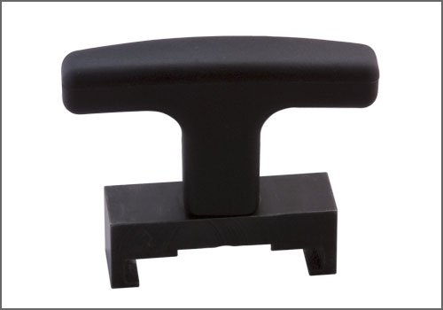

Ignition Coil Pack: Tools and Equipment
VW/Audi Coil Pack Puller
AST tool# 6639

Used for removing and installing ignition coils with final output stage. Comparable to factory tool # T 40039. Applicable to the following engines: 1.8T, 2.0T, 2.5T, 2.7L Bi-Turbo, 2.5L, 3.0L, 3.2L and 4.2L engines. Compact size, only 2 inches in length.
- Made in U.S.A.
- Compact size, only 2" in length
Contact AST for pricing.
Assenmacher Specialty Tools
1-800-525-2943